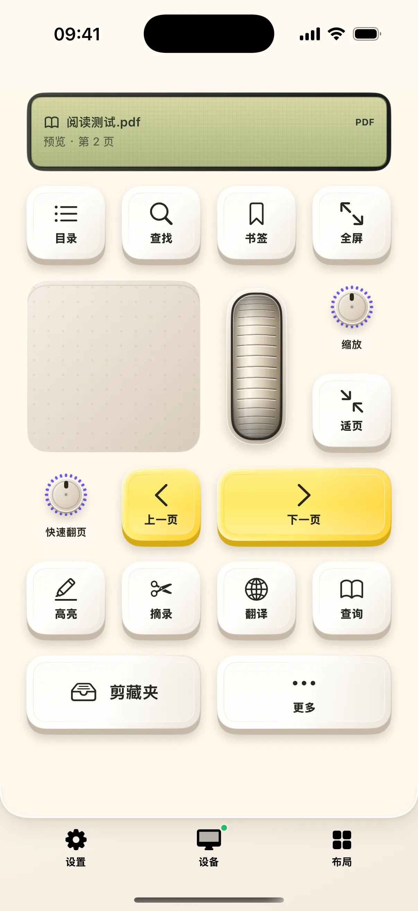

看到值得留下的一段话，先保存原文和出处，之后再写自己的想法。奶猫妙控的科研布局围绕这件事展开：上方显示 Mac 当前选文，下方提供检索、笔记与四个分类键，收藏保存在手机的统一剪藏夹中。
先在原文中选中一段文字
在 Mac 文档或网页中选文后，科研屏幕会显示预览和可取得的来源。点击屏幕可以重新读取。应用优先使用宿主提供的选区，必要时通过一次复制读取文本；扫描件没有可复制文字时，不会自动进行 OCR。
分类收藏与个人笔记
观点、方法、证据、疑问四个按钮可以直接收藏当前选文。「记笔记」先让你核对原文和出处，再补上自己的思考。手机确认保存后才提示收藏成功；来源信息只记录实际读到的标题、链接和页码，不生成缺失的文献元数据。

检索之后还能回到原来的材料
查概念和找论文分别进入相关检索页面。打开检索后仍保留原选文，方便继续收集或返回原阅读窗口。带出处复制适合把摘录放回 Mac 文稿，但它不是自动更新的参考文献管理器，正式引用仍需核对原始资料。
剪藏夹可以离线整理
剪藏夹支持正文、笔记、图片和文件，收藏与输入历史分别标记。可按网址、图片、文件或文本筛选，再与关键词搜索叠加；多选后可批量导出原附件和文本。断开 Mac 后仍能打开、编辑、分享收藏，也能把内容放回键盘草稿。
开始使用
- 在 Mac 选中资料中的一段文字。
- 打开「科研」，核对预览与来源。
- 点击分类收藏，或写下笔记，再到剪藏夹查看。
常见问题
会自动生成论文引用吗？
保存实际取得的来源信息并提供带出处复制，不会补造作者、年份、DOI 或页码，也不生成可自动更新的引用。
没连 Mac 能打开收藏吗？
可以。剪藏夹保存在手机本地，支持离线查看和整理。
本文对应 1.2.0。查看更新说明，或加入 iPhone / iPad TestFlight。